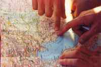
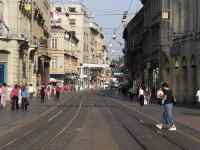

 This article deals with one of the languages of the region of Istria and Quarner. One of the main reasons why this particular area fascinates me is its linguistic diversity. Let me say a few words about this region and its languages. Quarner belongs to Croatia, while Istria is divided between three states - Croatia, Slovenia and Italy. There are three official languages - Croatian (in Croatia), Slovenian (in Slovenia) and Italian (in most of Istria). Each of these has its own vigorous local dialect - Chakavian, Littoral and Istro-Venetian, respectively. Apart from these widely spoken languages, there are some smaller linguistic groups in Istria. Numerous immigrant groups have brought their native languages with them, but I'd like to focus on the languages of autochthonous groups. Some of these languages became extinct in the 19th century. This was the case with two Romance idioms - the Friulian dialect of Muggia (the last speaker died in 1889) and the Dalmatian dialect of the island of Krk (the last speaker died in 1898). Three other small languages have survived - the Montenegrin Shtokavian dialect of Peroj, the Istriot language, and finally, the subject of this article, Istro-Romanian.
By Istro-Romanian linguists mean a set of Romance vernaculars spoken in Eastern Istria (Croatia), undoubtedly closely related to Romanian. At present, this language is facing the danger of extinction. There are only about 300 speakers, mostly old people and very few children. The vernaculars are divided into two geographically isolated groups. The first consists of the dialect of Žejane, a village north of the Ćićarija mountains with about 100 Istro-Romanian speakers. The vernaculars of the second group are spoken more than 20 kilometres to the south of Žejane, in Nova Vas, Šušnjevica, Kostrčan, Jesenovik and a few other villages, where about 110 speakers live. Istro-Romanian is also spoken by some emigrants in Croatia, Slovenia, Italy, Germany, Austria, Sweden, the US, Canada and Australia. It is not taught at schools and there is no literature, press, radio or television in this language. Istro-Romanian has no codified spelling. In this article, different orthographies will be used, as I usually follow the spelling used by my sources.
The first traces of Romanian speakers in Istria can be found as early as in the 12th century, but present-day Istro-Romanians are probably descendants of Romanic people who settled in Istria in the 16th century. Some loanwords in Istro-Romanian suggest that these people previously lived in the Northern Dalmatia hinterland, around the Dinara and Velebit Mountains. At the end of the 15th century they also settled in Krk, and a vernacular very similar to Istro-Romanian was still spoken on that island in 1819. In 1698 A historian from Trieste, Ireneo della Croce, mentioned people who, 'beside the Slavic idiom common for all the Karst area, speak also their own and particular language, which is similar to Wallachian and contains many different Latin words'. He was undoubtedly referring to Istro-Romanian, which was probably much more widely spoken in his time. It is worth emphasizing that he mentioned the bilingualism of the Istro-Romanians. Nowadays, Istro-Romanians are perfectly bilingual (or even trilingual) too. Like all the surrounding population, they speak Croatian. If they didn't, they couldn't communicate with people from other villages and towns, not to mention authorities, newspapers, television and so on. Some older people also speak Italian - either Venetian, which was a prestigious language of Istria before the Second World War, or the standard Italian they learned at school when the whole of Istria belonged to Italy (1918-1943). If we take into consideration more than three centuries of Romanian-Slavic bilingualism or Romanian-Slavic-Italian trilingualism, and also the fact that Istro-Romanian doesn't have any institution to guard the 'pureness' of the language, then it will become clear why we can observe such far-reaching effects of Croatian and Italian influence on Istro-Romanian vocabulary, phonetics and grammar.
We can find many Slavic loanwords in the Istro-Romanian version of the Lord's Prayer:
Ciace nostru car le ști ăn țer,
neca se sveta nomelu teu.
Neca venire craliestvo to.
Neca fie volia ta, cum ăn țer, așa și pre pemint.
Pera nostre saca zi de nam astez.
Odproste nam dutzan,
ca și noi odprostim a lu noștri dutznici.
Neca nu na tu vezi en napastovanie,
neca na zbăvește de zvaca slabe.
Words of Proto-Romanian origin such as 'țer' (Romanian 'cer') and 'nostre' (Romanian 'noastră') are found alongside obvious Slavic loanwords like 'craliestvo' (Croatian 'kraljevstvo') and 'slabe' (Croatian 'slab').
The names of the days of the week provide another example of lexical hybridization. The following table presents these names in standard Romanian, Istro-Romanian of Žejane and a Slavic dialect from a village close to Žejane:
| Romanian | Istro-Romanian | Slavic |
| luni | lur | pondeljak |
| marți | utorek | utorak |
| miercuri | sredu | sreda |
| joi | četrtoc | četrtak |
| vineri | virer | petak |
| sâmbătă | simbota | subota |
| duminică | dumireca | nedelja |
As you can see, Istro-Romanian of Žejane has preserved the Romanic names for Monday, Friday, Saturday and Sunday, but introduced the Slavic names for Tuesday, Wednesday and Thursday.
Comparing the Romanian and Istro-Romanian names, you can see a peculiar Istro-Romanian phonetic shift. Intervocalic [n] transformed into [r] (for example vineri => vireri). The same shift occurred in some peripheral Romanian dialects, while standard Romanian only accepted a shift from intervocalic [l] into [r] (for example Latin 'caelum' became Romanian 'cer').
The case of Istro-Romanian wouldn't be unusual at all if the foreign influence only manifested itself in its vocabulary. What makes it so interesting is the fact that Istro-Romanian grammar also underwent a deep transformation as a result of the Croatian and Italian influence. Even some new grammatical categories appeared in Istro-Romanian.
For example, the Istro-Romanian dialect of Žejane lost the typical Romanian ambigender and developed a new neuter gender with the Slavic –o ending in the nominative singular. The neuter nouns are Slavic loanwords, such as 'nebo', 'srebro' and 'testo'.
One of the most interesting manifestations of Slavic influence is Istro-Romanian Slavic-like verbal aspect. Istro-Romanian is the only Romance language which developed this grammatical category. As in Slavic languages, every Istro-Romanian verb is either perfective, imperfective or both. As in Slavic languages, perfective verbs are often derived from imperfective verbs by prefixation. Usually, prefixes of Slavic origin (do-, po-, za-, etc.) are used. Romanian prefixes (e.g. a-) are rare. Here are some examples along with the corresponding Croatian words:
| Istro-Romanian | Croatian |
| Imperfective | Perfective | Imperfective | Perfective |
| leti | doleti | letjeti | doletjeti |
| suje | posuje | sisati | posisati |
| durmi | zadurmi | spavati | zaspati |
| duce | aduce | voditi | dovesti |
Iterative imperfective verbs are often derived from perfective verbs by infixation. The Croatian –iv-/-av- infixes are used.
| Perfective | Iterative |
| cosi | cosivui |
| ieși | ieșivui |
| aduțe | aduțavăi |
The Italian influence on Istro-Romanian grammar is much smaller. It can be seen in the new Istro-Romanian passive voice, which consists of the verb 'veri' and the past participle. For example, 'the cow has been killed' can be translated into Istro-Romanian as 'vacå verit-a uțisă', by analogy with Italian (especially North Italian) 'la vacca venne uccisa'.
To be sure, even if influenced by Croatian and Italian, Istro-Romanian shares many features with Romanian. Some of them show that Istro-Romanian and (Daco-)Romanian split later than did (Daco-)Romanian and other Eastern Romance idioms (Aromanian and Megleno-Romanian).
Like standard Romanian, Istro-Romanian has definite and indefinite articles. Like standard Romanian, Istro-Romanian has a simplified declension, with the nominative form being the same as the accusative and the genitive form being the same as the dative. Many Istro-Romanian tenses are identical to the corresponding Romanian tenses.
Istro-Romanian is not only a linguistic curiosity, but also constitutes outstanding material for those studying language interference and hybridization.
Fenek (Paweł Penszko)
Main Sources
1. Goran Filipi, Istrorumunjski lingvistički atlas. Atlasul linguistic istroromân. Atlante linguistico istrorumeno, Znanstvena zadruga Mediteran, Pula 2002.
2. Goran Filipi, About the Istrian-Roumanian Forms of the Splira Type, Annales. Anali za istrske in mediteranske študije. Annali di Studi istriani e mediterranei. Annals for Istrian and Mediterranean Studies, Series Historia et Sociologia, 12, 2002, 2
3. Section Istrorumunjski jezikovni in kulturni otoki in Annales. Anali za istrske in mediteranske študije. Annali di Studi istriani e mediterranei, 6/'95, Series Historia et Sociologia 2
4. Istro-Romanian on Wikipedia: http://en.wikipedia.org/wiki/Istro-Romanian_language
5. Istro-Romanian on istrianet.org: http://www.istrianet.org/istria/linguistics/istrorumeno/index.htm
October 1, 2005
© 2005 Babel Babble UniLang Monthly Magazine